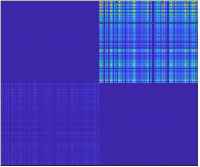

stratified.pot1.reflected
Reflected single and double layer potential for matrix-friendly boundary element method approach of Chew.
- Chew et al., IEEE Antennas Wireless Propagt. Lett. 5 , 490 (2006).
- Chew, Tong, and Hu, Integral equation methods for electromagnetic and elastic waves, Morgan and Claypool (2009).
Contents
Initialization
% initialize reflected potential integrator % layer - layer structure % tau1 - first set of boundary elements % tau2 - second set of boundary elements % 'waitbar' - show waitbar during evaluation % 'nr' - number of radial tabulation points % 'nz' - number of z-values for tabulation pot = stratified.pot1.reflected( layer, tau1, tau2, PropertyPairs );
Other property pairs will be directly passed to the stratified.isommerfeld integrator
Methods
% compute Calderon matrix for reflected Green functions % green - tabulated reflected Green functions w/ appropriate size % k0 - wavenumber of light in vacuum % 'siz' - size of output matrix cal = calderon( pot, green, k0, PropertyPairs );
Examples
In the following we compute the reflected part of the Calderon matrix for a gold sphere above a substrate. We first set up the structure, the Green function object, and the potential integrator.
% materials for glass substrate, air, and gold mat1 = Material( 2.25, 1 ); mat2 = Material( 1, 1 ); mat3 = Material( epstable( 'gold.dat' ), 1 ); % layerstructure layer = stratified.layerstructure( [ mat1, mat2 ], 0 ); % nanosphere situated 5 nm above substrate p = trisphere( 144, 50 ); p.verts( :, 3 ) = p.verts( :, 3 ) - min( p.verts( :, 3 ) ) + 5; % boundary elements with linear shape functions tau = BoundaryEdge( [ mat1, mat2, mat3 ], p, [ 3, 2 ] ); % slice positions and set up computational grid r = slice( layer, p.pos, p.pos ); r = grid( layer, r, 'nr', 20, 'nz', 20 ); % set up tabulated reflected Green function object green = stratified.tab.green( r ); % potential integrator pot = stratified.pot1.reflected( layer, tau, tau );
We can now fill the tabulated Green function and compute the reflcetd part of the Calderon matrix.
% wavenumber of light in vacuum k0 = 2 * pi / 600; % fill Green function table and refletced part of Calderon matrix green = fill( green, k0 ); cal = calderon( pot, green, k0 ); % plot Calderon matrix imagesc( abs( cal ) .' );

Copyright 2023 Ulrich Hohenester